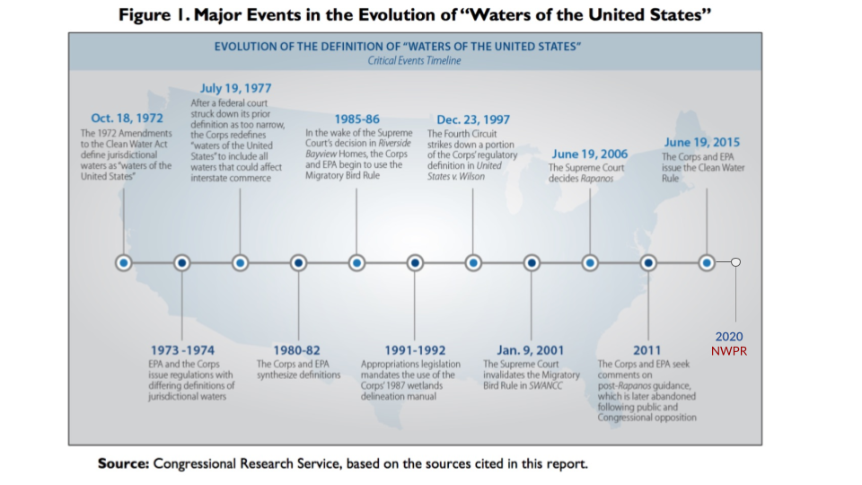

Background: Clean Water Act (1972)

What is CWA?
The CWA of 1972 is the principal law governing pollution of the nation’s surface waters … which include rivers, streams, lakes, reservoirs and wetlands. The act prohibits the unauthorized discharge of pollutants into what are called “navigable waters”of the nation - which refers to all waters upon which interstate commerce could be conducted.
How is it implemented?
Industrial, municipal or other facilities that wish to discharge waste or waste water into navigable waters, ...are required to obtain a permit from the US Army Corps. A permit approves discharges after a field inspection and specifies pollutant levels that need to be adhered to so that the physical, chemical and biological integrity of the waters are not compromised. The USACE along with the EPA, have the ultimate authority to enforce and ensure CWA compliance.
What has changed?
Over the last 50 years, the regulatory scope of waters protected under the CWA has been subject to numerous legal challenges and judicial review, including multiple litigation actions in the Supreme Court.
2 such were the SWANCC & RAPANOS in the early 2000s, whose court rulings resulted in the removal of federal protection for a large share of US waters, primarily headwaters, intermittent streams, and isolated wetlands.
In 2015, the Obama administration issued the CWR which expanded the jurisdictional scope by including oversight of ditches and shallow wetlands, which when swollen with rain could carry pollution downstream. This was estimated to have affected about 60% of the water bodies.
However, the Trump administration challenged and suspended this rule in February 2020 and subsequently issued the NWPR, that pulled back federal protection for millions of miles of streams and wetlands that had been protected for decades.
So what was the basis for these legal challenges?
It is the premise that the administering agencies ( i.e. the EPA and the USACE) have expanded the jurisdictional scope of federally protected waters and wetlands beyond original Congressional intent.